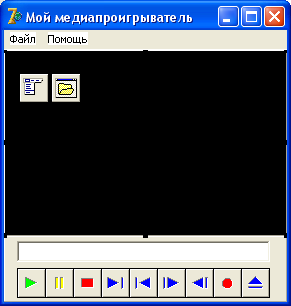

Мультимедиа в Delphi
Что такое мультимедиа?
На ум сразу же приходят файлы звуковых, музыкальных и видео-форматов.
Несмотря на кажущуюся сложность специфики мультимедийных программ, сделать аудио- видеопроигрыватель на Delphi достаточно просто.
Давайте сразу рассмотрим это на примере.
Создайте новое приложение.
Форму переименуйте в fMain, в свойстве Caption укажите "Мой медиапроигрыватель" и сохраните проект под именем myPlayer.
В нижнюю часть формы установите панель.
Растяните ее по всему низу ( Align = alBottom ).
Выше установите еще одну панель, растяните ее по всей оставшейся части формы, это будет экран.
Разумеется, свойства Caption обеих панелей нужно очистить.
Далее на нижнюю форму установим компонент Edit, в него мы будем записывать имя загруженного файла.
Сразу можно установить у него свойство ReadOnly в True, ведь пользователю не нужно редактировать имя файла.
И очистите у этого компонента текст.
Ниже компонента Edit установите компонент MediaPlayer с вкладки System палитры компонентов.
Это основной компонент для проигрывания и звука, и видео.
У него есть несколько полезных свойств, с которыми мы познакомимся чуть позже.
Установите у Edit такие же свойства Left и Width как у MediaPlayer.
А сам плеер (свойство Name ) переименуйте в MP, чтобы не нужно было писать длинного имени при обращении к его свойствам.
Далее, нам понадобится главное меню, чтобы можно было открыть файл.
Создайте там пункт "Файл" и подпункты "Открыть", "-" и "Выход".
Еще один пункт "Помощь" и подпункт "О программе".
Теперь у верхней панели (это у нас Panel2 ) установите черный цвет (свойство Color ).
Это будет экран для воспроизведения видеофайлов.
Вообще то вы можете установить у экрана любой цвет, или вовсе его не менять, однако черный фон для воспроизведения видео более приятен для глаз, поэтому экраны в подобных программах делают обычно черного цвета, в отличие от белых экранов кинотеатров.
Вернемся к компоненту MediaPlayer.
Как видите, он состоит из ряда кнопочек, которые имеют собственные имена и назначения.
Кроме того, компонент MediaPlayer имеет методы, которые дублируют эти кнопочки, что позволяет использовать компонент в двух вариантах – видимым и невидимым.
В первом случае, пользователю предоставляется возможность управлять воспроизведением непосредственно из этого компонента, во втором случае компонент не виден, и мы можем привязать его методы к собственным кнопочкам или пунктам меню.
Мы воспользуемся первым методом.
Давайте рассмотрим кнопки слева – направо, их имена и назначения.
Названия кнопок и их описания подробно приведены в таблице:
| Имя кнопки | Назначение кнопки |
|---|---|
| Play | Воспроизведение |
| Pause | Пауза воспроизведения или записи. |
| Stop | Остановка воспроизведения или записи. |
| Next | Переход на следующий трек или на конец. |
| Prev | Переход на предыдущий трек или на начало. |
| Step | Перемещение вперед на заданное число кадров. |
| Back | Перемещение назад на заданное число кадров. |
| Record | Начало записи. |
| Eject | Освобождение объекта, загруженного в устройство. |
Каждой кнопке, как уже говорилось, соответствует метод с таким же действием и именем.
То есть, нажатие на кнопку "Play" приведет к тому же, что и команда
MP.Play;
то есть, к проигрыванию выбранного файла.
Разберем свойства компонента.
AutoEnable.
Это свойство включает и выключает автоматическое определение доступности кнопок компонента.
К примеру, если нет устройства, которое нужно освобождать, то кнопка Eject будет недоступна.
AutoOpen.
Если это свойство равно True, то компонент сразу при загрузке программы начинает проигрывать указанный файл.
Однако при проектировании нужно будет сразу указать имя файла.
Мы же делаем плеер, и заранее не знаем, какой файл будет проигрывать пользователь, поэтому оставим его в False.
DeviceType.
Содержит тип устройства.
Например, музыка это или видео-файл.
По умолчанию установлен тип dtAutoSelect, то есть компонент будет самостоятельно определять тип устройства.
Так его и оставим.
Display.
Интересное свойство.
Оно указывает, какой именно компонент мы будем использовать, как экран, для просмотра видео.
Выберем там Panel2, которую мы окрасили черным цветом.
EnableButtons.
Раскрывающееся свойство, где мы для каждой кнопки можем указать доступность или недоступность.
FileName.
Содержит имя медиа-файла.
Если мы укажем его жестко, то свойство AutoOpen можно поставить в True, и тогда при загрузке программы файл автоматически начнет проигрываться.
Но мы оставим его пустым, а прописывать файл будем программно.
VisibleButtons.
Работает аналогично EnableButtons, только делает указанные кнопки невидимыми.
Из методов компонента интересны следующие:
Open.
Открывает мультимедийное устройство.
Перед тем, как проигрывать файл, устройство обязательно нужно открыть.
DisplayRect.
Метод указывает размер и позицию экрана.
Этот метод должен получить в качестве параметра 4 целых числа.
Close.
Закрывает устройство.
С теорией покончено, перейдем к практике.
Нам потребуется также компонент OpenDialog, чтобы пользователь мог выбрать файл.
В результате, у вас должна получиться такая форма:
Теперь о форматах файлов.
Увы, не каждый формат можно будет проиграть в таком проигрывателе.
Разные видео- и аудио-файлы имеют собственные форматы.
Например, даже файл *.avi может быть разного формата.
Компонент рассчитан под звуковые форматы *.wav и *.mid, если же в операционной системе установлен медиа-плеер, то можно проигрывать и *.mp3.
Поддерживаемый видео-формат - *.avi.
Однако, если установлены различные "кодеки", то есть драйверы под различные форматы, то можно смотреть и файлы формата mpeg4, однако *.dat, в котором обычно делаются клипы, посмотреть не удастся.
Поэтому в свойстве Filter компонента OpenDialog нужно будет указать соответствующий фильтр:
- Видео-файлы *.avi; *.mpg
- Аудио-файлы *.wav; *.mid;*.mp3
- Все файлы *.*
Давайте сразу же обработаем команду меню "Файл – Выход", и напишем там
Close;
Теперь будем иметь в виду, что пользователь может закрыть программу и кнопкой, а нам обязательно нужно будет закрыть компонент MediaPlayer.
Поэтому делаем для формы обработчик событий onDestroy и там его закрываем:
MP.Close;
Теперь создаем обработчик для команды меню "Файл – Открыть".
Здесь мы имеем в виду, что пользователь может попытаться открыть файл с неподдерживаемым форматом.
Тогда возникнет ошибка.
Поэтому мы воспользуемся блоком исключительных ситуаций
try – except – end;
Этот блок отличается от знакомого нам
try – finally – end;
тем, что в случае возникновения ошибки будет выполнен блок except – end;, а если ошибки не будет, блок не выполнится.
Во втором примере блок finally – end; будет выполнен в любом случае.
Итак, наш код обработки команды меню "Файл – Открыть":
procedure TfMain.N2Click(Sender: TObject);
begin
if not OpenDialog1.Execute then Exit;
try
Edit1.Text := ExtractFileName(OpenDialog1.FileName);
MP.FileName := OpenDialog1.FileName;
MP.Open;
MP.DisplayRect := Rect(0,0,Panel2.Width, Panel2.Height);
except
ShowMessage('Ошибка открытия файла!');
Exit;
end; //try
end;
Итак, что здесь происходит?
Если диалог с пользователем не состоялся, то мы выходим из процедуры, ничего не делая.
Иначе открываем блок try – except – end.
Если между try и except произойдет ошибка (пользователь попытается открыть файл не поддерживаемого формата), то выполнится блок между except – end, в котором мы поясняем пользователю, что произошла ошибка открытия файла.
Далее мы выводим в Edit1 имя выбранного файла, после чего этот же файл присваиваем медиа - плееру.
Затем мы открываем плеер.
Строка
MP.DisplayRect := Rect(0,0,Panel2.Width, Panel2.Height);
Заставляет видеоизображение принять размеры формы: мы указываем координаты верхнего угла 0,0 – это самый верхний левый угол панели, и ширину и высоту панели, как координаты другого угла.
В результате размер видеоизображения займет всю панель.
Однако имейте в виду, что фильм может быть и широкоформатным, поэтому он будет искажен.
Чтобы исправить дело, пользователю придется изменять размер формы мышкой.
Если мы не предусмотрим изменение пользователем размеров экрана, размеры изображения меняться не будут.
Создадим для формы событие onResize, которое происходит каждый раз, когда пользователь меняет размеры формы, и продублируем там указанную выше строку.
Вот, собственно, и вся программа.
Конечно, профессиональные медиа- проигрыватели делают другим способом, намного более сложным.
Однако этот компонент легко применять в различных программах для показа видео-файлов, или прослушивания звуковых файлов.
Сохраните проект, скомпилируйте его и посмотрите, как он работает.
Стандартные звуки Windows можно найти в папке
C:\windows\media
А видео-файл можно найти по адресу
C:\program files\borland\delphi7\demos\coolstuf\speedis.avi
Осталось только сделать форму About, и выводить ее по команде меню "Помощь – О программе".
Но это уже сделайте самостоятельно.